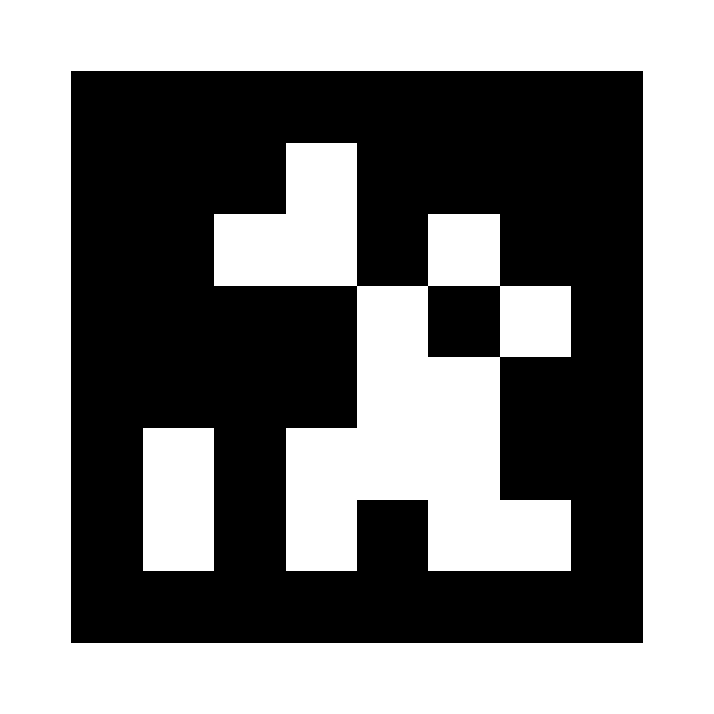
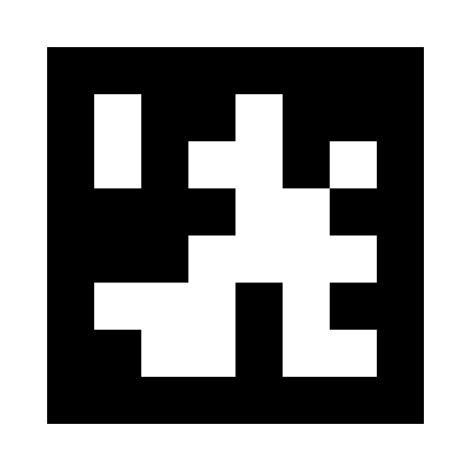

These AprilTag tag36h11 samples use IDs 0 and 1. Select that family in AprilTag Studio. You can also open either PNG on another screen to try detection.
Print on plain white paper at 100% / actual size, with browser headers and footers turned off. Each black outer square should measure 120 mm. Check with a ruler; for pose estimation, set the tag size to 0.120 m or your measured size. Do not include the white margin in the tag size.
Keep the white border visible and the paper flat. Accurate distance and orientation also require calibration for your webcam and selected resolution.

Tag size: 120 mm / 0.120 m. Measure the black outer square; exclude the white margin. Print at 100% / actual size.
100 mm verification line

Tag size: 120 mm / 0.120 m. Measure the black outer square; exclude the white margin. Print at 100% / actual size.
100 mm verification line